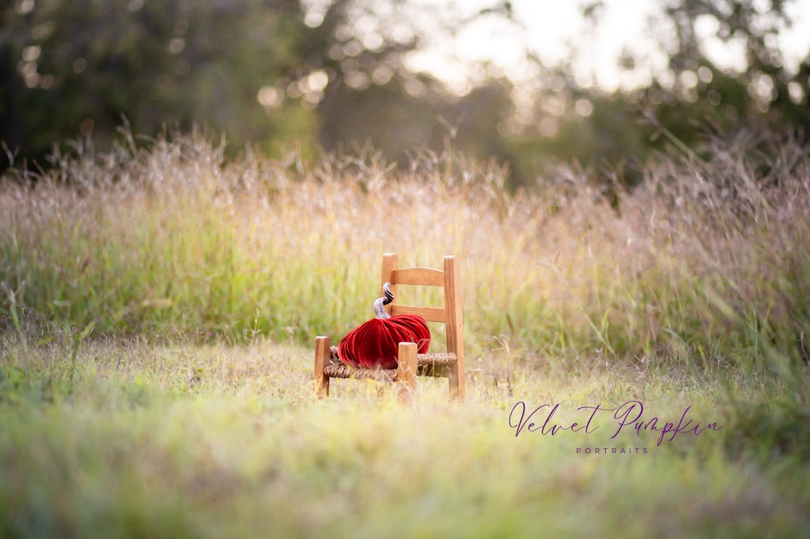

Top 5 Photography Locations in Victoria, Texas
| November 12, 2025 |
It’s not uncommon for photographers to “gatekeep” industry secrets, from favorite tools and camera gear to, of course, photo locations. I get it. It’s an oversaturated market, and holding onto anything that gives you a little edge makes sense.
But here’s the thing: we could shoot in the same spot, at the same time, and the photos still wouldn’t be the same. Every image reflects the technical details — the gear, camera settings, and lighting — but most importantly, the vision of the photographer. Add in post-processing (where each artist’s personality really shines), and no two photos ever look alike.
With that in mind, here are five local favorite photography spots in Victoria, Texas, that are worth exploring.
Riverside Park
Riverside Park is a go-to for so many reasons. It offers a variety of backdrops depending on the aesthetic you’re after: from grassy green trails and the Duck Pond to open fields perfect for golden-hour sessions. I’ve seen everything here, from cake smashes to bridal portraits.
Because it’s such a community favorite, don’t be surprised if another photographer beats you to your chosen spot. And although this doesn’t happen too often, it’s helpful to check local homecoming/prom dates because on those dates, they make the whole place shimmerrrr (yes, that’s a Taylor Swift reference).


Pebble Beach
Technically part of Riverside Park, Pebble Beach still deserves its own spotlight. It’s small but mighty, offering different textures and moods — soft white sand for those barefoot portraits or smooth river pebbles for a more rustic “creek” look. The weathered river bend makes a beautiful natural backdrop, especially during golden hour when the light bounces off the water just right.
A few quick tips: Pebble Beach is the first to flood after heavy rain, so always check the forecast before planning a session. Alligators have been spotted throughout Riverside Park, so stay aware, and be prepared to edit out the occasional stray bit of litter like cans, cups, or socks.


Downtown Victoria
Downtown Victoria is charming, historic, and beautifully maintained. The local businesses take real pride in their storefronts, perfectly embodying Keep Victoria Beautiful.
Many photographers head straight for the gazebo in DeLeon Plaza, and it’s classic for a reason, but Downtown offers so much more creative potential. Sweet moments on park benches with the courthouse in the background, professional headshots at vintage lamppost street corners, and artistic reflection shots in front of The Prosperity Bank building are all great choices. I’ve even used Blume & Flour Coffee Shop to capture some cozy, lifestyle-style photos. For a more urban vibe, the nearby parking garages are perfect, and the shaded residential streets make you feel like you’ve stepped right into The Notebook.
Before booking, check the community calendar since at any given time there may be an event taking place. And remember to respect private property and local businesses while shooting — they make the area as beautiful as it is.


J Welch Farms
Just outside of Victoria, J Welch Farms is a dream if you’re looking for wide-open fields and seasonal color. Each summer, usually around June, their zinnia fields bloom and create the most breathtaking backdrop. There is also a traditional fall “set up” available come September/October with a rustic pickup truck, hay, and pumpkins! This aligns with corn maze season, so be sure to follow their updates, since bloom times and pumpkin patch season can shift depending on the weather. It’s also worth factoring in the cost of admission when planning your session, as this can be costly for large families.


The Harco Studio
Last but not least, The Harco Studio is an incredible option when you need an indoor setup. The space features tall ceilings, large windows with gorgeous natural light, and enough room for full-length portraits (just skip the zoom lens). Their booking process is straightforward, and the ladies who run it are so kind to work with. The studio is located in the old Mitchell School, upstairs, so plan accordingly if you’re hauling a lot of equipment!


Final Thoughts
Whether you’re shooting a milestone session, updating your brand photos, or just exploring new creative angles, Victoria has plenty of hidden gems for photographers. Each location offers a new way to capture the beauty and personality of our community.